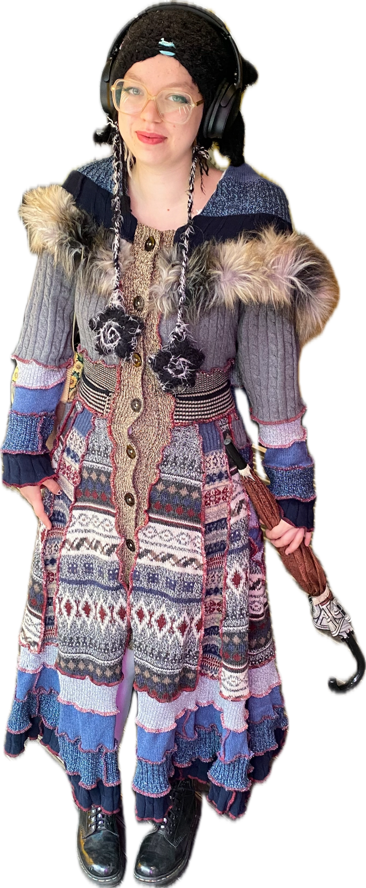

My name is Logan and I am currently a 20 year old living in chicago who is interested in different yarn brands and yarn textures - I like to crochet. I also enjoy a lot of websites on neocities and thus - sparked my love of coding.
I care a lot about making technology feel welcoming. Most of my work lives at the intersection of web development, community organizing, and creative computing, where I get to help other people see what they can build with code.
links look like this ✚ bold text looks like this ✚ italics look like this ✚ underline looks like this more cute textI am a Computer Programming and Software Design student at Columbia College Chicago, an arts‑focused school where I’ve spent a lot of time figuring out how to blend code with collaboration.
For a long time I worked mostly on backend projects and assumed that meant my corner of computing had to be a quiet, lonely one.
In my junior year, that started to change. I began seeking out ways to write code with people instead of just for people, and to treat development as a space for shared problem‑solving, experimentation, and play.
Now, whether I am mentoring another student through a bug, sketching a database schema for a festival, or helping someone publish their first website, I feel most myself when I am helping others grow through computing.
Right now, I spend a lot of time building responsive, user-focused applications using .NET, C#, Blazor, HTML, CSS, and SQL, and thinking about how those tools can support real people and real communities.
I've worked as a Software Development Intern for the Chicago International Puppet Theater Festival, where I helped lead a team of interns building an inventory management web app in Blazor, focusing on data design, MudBlazor components, and cloud hosting.
I also work as a programming tutor, supporting students in HTML, CSS, C#, and game development, and as a club leader, organizing workshops, events, and game jams that invite people into code through play.
Much of my day-to-day practice involves version control, agile workflows, and cloud environments like AWS and Azure, but the through-line is simple: use these tools to make it easier for people to learn, share, and build together.
One of my proudest ongoing projects is Websites Websites Websites, a web development club I founded to help students from all majors create and publish their own sites.
We trade tutorials, debug each other's ideas, and celebrate every new page that goes live. The club has become a place where nervous beginners turn into confident tinkerers.
I've also participated in multiple game jams, served as Game Forge Club President, and led STEM workshops for younger students, using playful projects to demystify code.
If you poke around my portfolio, you'll find a mix of web tools, small games, and experiments in interactive storytelling, all connected by the same goal: lowering the barrier to entry for creative computing.
I care deeply about accessibility, clear communication, and thoughtful collaboration. I like teams where questions are welcome, documentation is kind, and everyone is allowed to learn out loud.
My long-term goal is to keep working on software that supports education, arts, and community spaces—projects where code is not just efficient, but also humane.
When I'm not coding, I'm usually experimenting with new yarn textures and crochet projects, exploring indie web neighborhoods, or coming up with ideas for the next workshop.
If any of this resonates with you, I'd love to connect, swap links, or hear about what you're building.
You can reach me at loganrsilvers@gmail.com or find more of my work at github.com/loganrsilvers.
I'm currently open to internships, collaboration on web projects, and opportunities to support community-oriented tech.